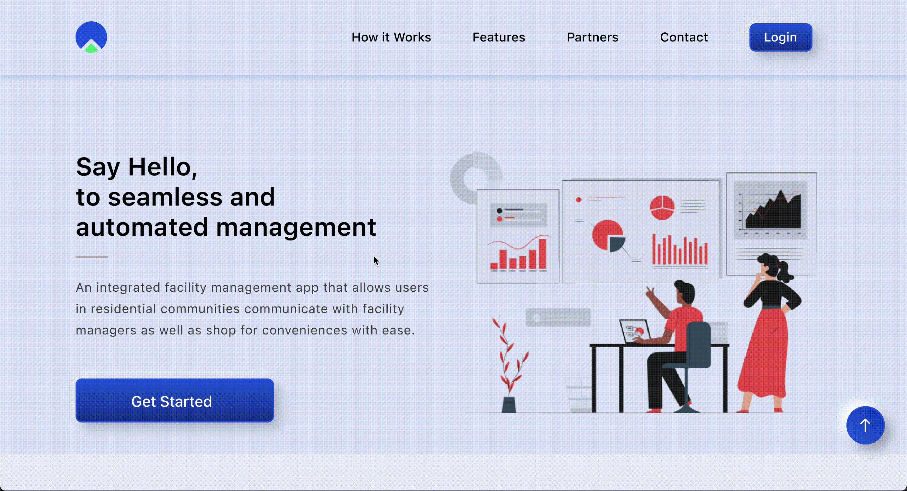
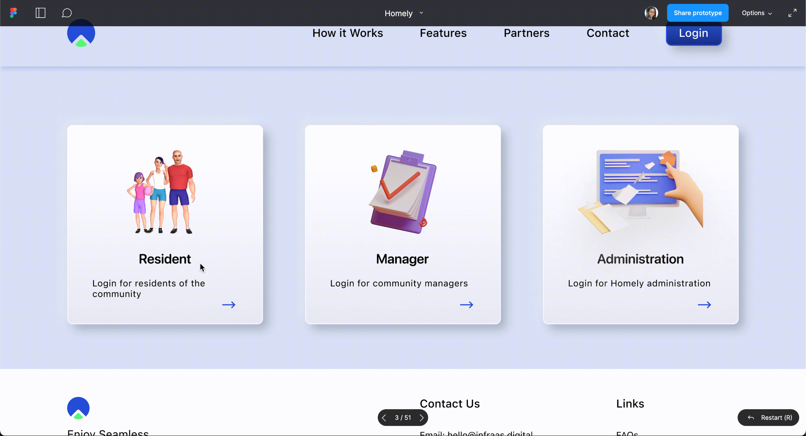

Existing facility management system and solutions are not designed with users in mind as they do not provide residents with a way to perform complete end to end management of tasks which makes users have to still use multiple applications to perform their tasks. To overcome this challenge, we looked at a tool that would automates all the major inconviniences of living in an apartment for the residence, and seamless management of residential communities by facility managers. The final solution would combine facility management with fanatic user welfare.
I was brought on as a product designer and tasked with designing a solution that would cover all these main challenges. With the user research and market analysis already done, I moved straight into moved into the user interface design, and prototyping. More details on how I went through this process and the final product are shown below.
6 weeks
Pen and paper
Figma
Product Design
Mobile
Web
Visual Design
Interactive Design
Prototyping
Kicked off the design process by defining the core goals and key features of the application by looking analyzing information from the user research provided.
Users need to know what all the options are, and how to access them immediately.
As soon as a user sees something, they know how to use it.
Users are able to complete tasks with minimal clicks.
By taking a look at user pain points, motivations, and core needs, I was able to come up with a list of initial features. However, one of the concerns with designing a “do-it-all” application with so many features is that it would become something like a Swiss Army Knife, it was important to focus on specific priorities and the list was distilled down to 6 main features.
· Quick access to important features
· Store: Groceries, Cooking gas
· Bills: Electricity, Water, Internet, Dues
· Grant access to visitors
· Request help
· Maintenance request
· User’s profile
· Add oother residents of an household
· Hold money: for bill payments and purchases
· Messages, announcements or notices.
At this point, I started to think about how all of the 6 core feaatures could be seamlessly integrated with each other. I did an initial sketch and wireframed my thoughts of what I thought would work to properly visualize them and futher analyze them to see what wouldn’t. Some of the initial concepts can be seen below.


 1.png)


 1.png)
Next, I start to build out the information architecture and userflows. My goal with this process is to carefully think through and answer questions around how users would experience the app.

The final solution is a combination of facility management with a focus on how to allow residents perform complete end to end management of tasks seamlessly through one app. I created user flows to showcase the different features of the app.
A simple and clear user experience for first time users to be introduce what they can do with the app and create their profile. It was important to guide the users , and ensure they understand and enjoy using the application as it had quite a features.

The dashboard was designed to provide the user with the most important information as soon as they launch the app. With the Quick actions section, users had access to the most important features straight from the homepage and could quickly perform a task. The most recent notices for the community and messages from the group chat could be seen in the messages section, and the Noticeboard and Groupchat messages could be accessed from the menu. functions and controls.

Using a big, red button for the emergency made it easy for users to easily click in case of an emergency, howeve because of it’s size it could be tapped in error, this is reduced by having to click a second menu option before the call goes out and it can be canceled immediately with the cancel button. In line with making the application end-to-end or fully automated, residents can request for maintenance, create passes for their visitors or call the gate house from the app.

The wallet provides a global overview, showing the balance, transactions performed and a detailed report to help users analyze and track their spendings. Residents are able to fund their account, and withdraw funds to a bank of their choice.

The shop menu has the utilities and store categories. Resident’s can click on an utility and select from a predefined amount or enter an amount of their choice and the money is deducted from their wallet balance. This process is straightforward and simple allowing users to complete this with a few clicks.
A combination of items in the store being grouped into categories and the search bar at the top of the page helps users navigate to or find items faster. Tapping on the add button of an item instantlly adds it to cart, and full details of an item can be accessed by clicking on the item. The cart can be accessed from the top of the screen where they can remove it, modify it or increase the number. From there, it's on to checkout, or back to the menu to add more items.
After placing an order, users are able to view the progress and status of their order. This would be paired with notifications so they can get alerts as their order progresses till it gets to them. All orders can be accessed from the homescreen.

The first profile created for an household is the admin for that resident, they can view and add other members to their household from their account, giving them access to all the features and services on their own device.
A log of all the visitors’s pass created and maintenance staffs can also be accessed from this tab.

The marketing website supports the launch of the mobile application with providing information about Homely as a tool for automated facility management. It showcases details of how the application works, the feautres available for residents and also community managers, partners and other customer stories for context. The visual design and graphics are in line with the look & feel of the mobile app and are inspired by the clean and modern aesthetic of Apple and the consumer tech industry. The website also provides access to residents, and community managers to login and manage their activities.
The resident login on the website serves as support to the mobile application, or for the occassional user that prefers accessing the tool from their browser.
The community manager is in charge of creating and maintaining all house profiles, residents, gate, emergencies, cars, visitors in a particular community. The homepage is an analytic dashboard overviewing the statistics of the community, providng access to information ata glance. Detailed reports can be generated and exported for each category, the manager also has the ability to send out notices, send messages to other staff, create dues, send payment reminders to residents, confirm emergency requests, visitor passes and maintenace requests, and all other community management activities.

The homely admin portal is the overseeing account, they are able to create and send messages to all the community manager accounts. The homely admin also manages the store, its contents and al orders. Detailed report on revenue can be accessed and generated. Emergency requests can alco be confirmed by the admin.